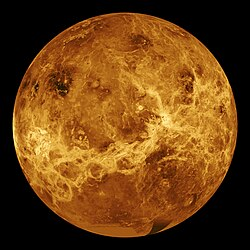
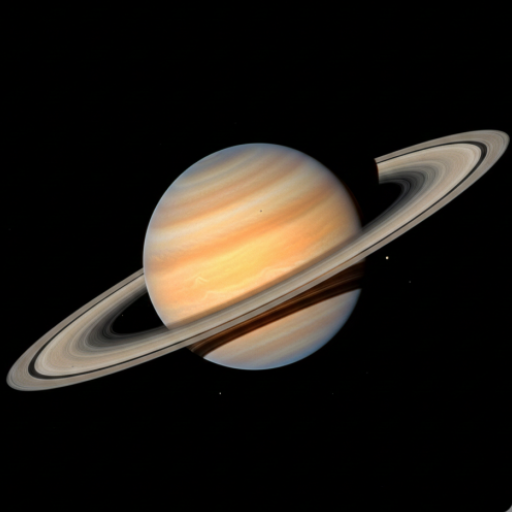

Venuša
Najhorúcejšia planéta (až 465 °C) kvôli hustej atmosfére a skleníkovému efektu;
navyše sa otáča opačným smerom než väčšina ostatných planét.
Zem
Jediná známa planéta so životom a tekutou vodou na povrchu,
ktorá pokrýva približne 71 % jej plochy.
Mars
Červená planéta má najvyššiu sopku v Slnečnej sústave (Olympus Mons),
ktorá je takmer trikrát vyššia než Mount Everest.
Jupiter
Najväčšia planéta, do ktorej by sa zmestilo viac ako 1 300 Zemí;
jej Veľká červená škvrna je obrovská búrka zúriaca už stáročia.

Saturn
Preslávený svojím rozsiahlym systémom prstencov z ľadu a prachu;
je taký ľahký, že by dokázal plávať na vode.
Neptún
Najvzdialenejšia planéta, na ktorej fúkajú najrýchlejšie vetry
v Slnečnej sústave, dosahujúce rýchlosť až 2 100 km/h.